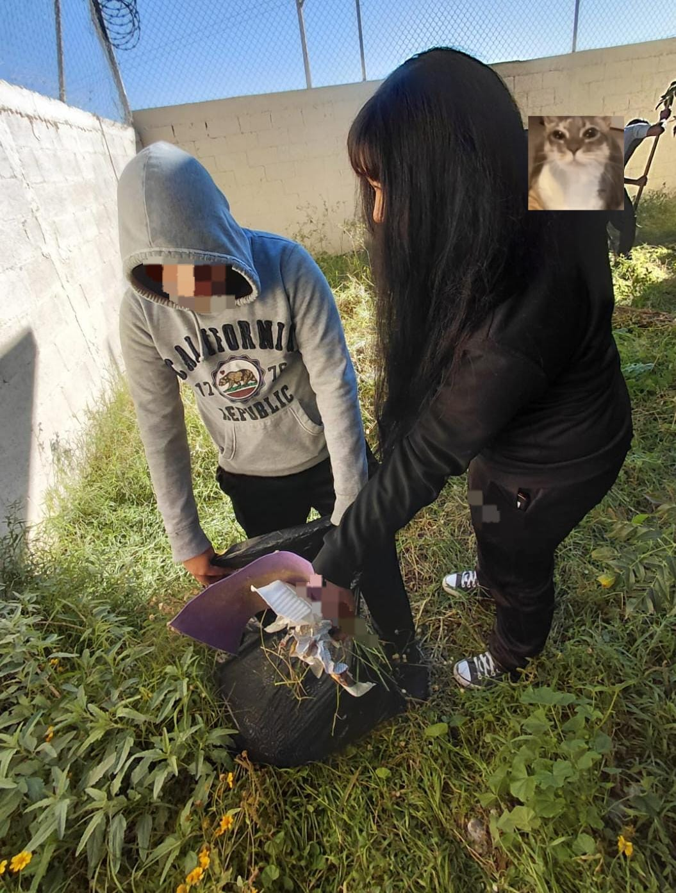
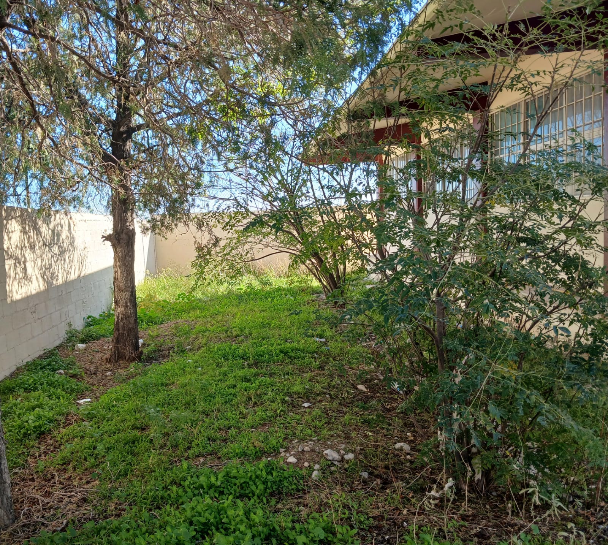

El Reciclaje en Nuestra Comunidad
Diagnóstico situacional de la generación de residuos, puntos críticos y áreas de mejora en la colonia.
¿Qué residuos se generan en nuestra comunidad?
En el entorno urbano y vecinal de la localidad, las actividades diarias de los hogares y la falta de cultura de separación generan una enorme variedad de desechos acumulados. Entre los materiales más frecuentes destacan:
- Botellas de plástico y envases diversos.
- Bolsas de botanas y bolsas negras de basura doméstica.
- Residuos de madera y muebles en desuso abandonados.
- Pañales desechables y residuos sanitarios.
- Papel, cartón y fragmentos de vidrio.
¿Dónde se acumula más basura?
La acumulación de basura y escombros representa un foco de atención en distintos puntos clave de la zona urbana:
Los sitios más afectados son los lotes baldíos, los patios y casas abandonadas, las calles sin mantenimiento, los parques públicos y los contenedores de basura que terminan rebasando su capacidad.
¿Qué problemas existen actualmente?
Esta acumulación descontrolada de residuos genera múltiples problemáticas que impactan directamente la calidad de vida:
- Contaminación ambiental y visual: Deterioro severo de la imagen urbana y acumulación de elementos contaminantes en la vía pública.
- Proliferación de fauna nociva: Los desperdicios atraen plagas e insectos, convirtiéndose en focos de infección.
- Taponamientos: La basura dispersa en las calles suele obstruir el flujo del agua en temporada de lluvias.
Evidencias fotográficas
A continuación se muestran evidencias del diagnóstico y de las acciones en la comunidad:


"Cuidar nuestra comunidad y promover la separación de residuos es tarea de todas y todos los vecinos."